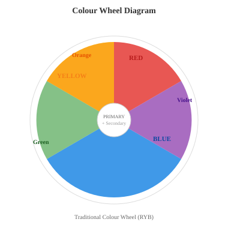
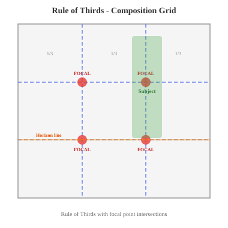

1. Summarization
- Verify the summary modal appears with 3 levels (Brief / Moderate / Detailed)
- Test switching between summary levels
- Test with both Local AI and Cloud AI modes
The Bauhaus, founded by architect Walter Gropius in Weimar, Germany in 1919, was a revolutionary art school that sought to reunify fine art and functional design under a single creative philosophy. Gropius envisioned a new kind of institution where painters, sculptors, architects, and craftspeople would work collaboratively, breaking down the traditional hierarchy that separated "high art" from applied craft. The school's founding manifesto declared that "the ultimate aim of all creative activity is the building," and its curriculum was structured around the Vorkurs (preliminary course), a radical foundation programme initially designed by Johannes Itten and later reshaped by László Moholy-Nagy and Josef Albers.
The Bauhaus attracted an extraordinary faculty whose individual contributions to art theory remain foundational to contemporary art education. Wassily Kandinsky taught analytical drawing and colour theory, developing his ideas about the spiritual dimensions of abstract form. Paul Klee led courses in pictorial composition and visual thinking, producing thousands of pages of pedagogical notebooks that are still studied today. Josef Albers, who progressed from student to master, developed systematic approaches to colour interaction that would later culminate in his landmark publication "Interaction of Color" (1963). Other notable faculty included Oskar Schlemmer (theatre workshop), Marcel Breuer (furniture design), and Anni Albers (weaving workshop).
The school's history was marked by political upheaval and forced relocations. Under pressure from conservative authorities in Weimar, the Bauhaus moved to Dessau in 1925, where Gropius designed the iconic school building that became a masterpiece of modernist architecture. When Hannes Meyer succeeded Gropius as director in 1928, the school shifted toward a more socially oriented design philosophy, before Ludwig Mies van der Rohe took over in 1930 and relocated the school to Berlin in 1932. The Nazis forced its closure in 1933. Many Bauhaus faculty emigrated to the United States, where they profoundly influenced American art education, most notably through the founding of the New Bauhaus in Chicago (later the Institute of Design at IIT) and the art programme at Black Mountain College, where Albers continued his colour research alongside figures such as John Cage and Robert Rauschenberg.
2. Text Simplification
- Verify the simplification modal appears with level selector (Basic / Moderate / Academic)
- Check that technical terms are explained inline
- Test switching between simplification levels
The semiotic analysis of visual culture, drawing upon the foundational structuralist linguistics of Ferdinand de Saussure and its subsequent application by Roland Barthes to the domain of cultural mythology, posits that all visual artefacts function as sign systems in which the relationship between signifier (the material form of the sign, such as a photographic image or typographic mark) and signified (the conceptual content to which it refers) is fundamentally arbitrary and culturally constructed. Barthes's distinction between denotation (the literal, first-order meaning of an image) and connotation (the secondary, ideologically inflected meanings activated through cultural codes, visual rhetoric, and intertextual reference) remains central to the critical analysis of advertising imagery, where the apparent naturalness of photographic denotation serves to mask the constructed nature of connotative meaning-making.
Stuart Hall's encoding/decoding model (1973) further complicates the transmission model of visual communication by demonstrating that the meanings inscribed into visual texts during their production (encoding) are not necessarily identical to the meanings extracted by audiences during reception (decoding). Hall identifies three hypothetical reading positions: the dominant-hegemonic position, in which the viewer decodes the message in accordance with the preferred reading encoded by the producer; the negotiated position, in which the viewer accepts the legitimacy of the dominant code in the abstract but adapts it to local conditions through inflection and opposition; and the oppositional position, in which the viewer recognises the preferred reading but deliberately deconstructs it within an alternative ideological framework, thereby producing a counter-hegemonic interpretation.
The polysemic nature of visual signs, that is, their capacity to generate multiple legitimate interpretations simultaneously, presents a fundamental challenge to any deterministic model of visual communication. As Judith Williamson demonstrated in "Decoding Advertisements" (1978), the advertising image operates through a process of interpellation in which the viewer is positioned as a subject through the transfer of meaning between signifying systems. The viewer does not passively receive a fixed message but actively participates in the construction of meaning through what Umberto Eco termed "aberrant decoding," a process by which the contextual knowledge, ideological positioning, and cultural competencies of the interpreter inevitably inflect and potentially transform the intended communicative act.
3. Socratic Tutor
- Verify 3-4 questions appear at different Bloom's levels (Comprehension, Analysis, Synthesis, Evaluation)
- Check that each hint is specific to its question (not all identical)
- Test "Show Hint" and "Go deeper" (follow-up) for each question
Printmaking is a family of artistic processes in which an image is transferred from a prepared surface (the matrix) onto another material, typically paper or fabric, enabling the creation of multiple originals. The four principal categories of printmaking are relief, intaglio, planographic, and stencil, each distinguished by how ink is applied to and transferred from the matrix. Printmaking has played a central role in the democratisation of visual culture since the invention of the woodcut in the fifteenth century, making images widely reproducible for the first time.
In relief printing, the artist carves away the non-image areas of a block, leaving the design raised; ink is applied to the raised surface and pressed onto paper. Woodcut, the oldest form, uses hardwood blocks carved with gouges and knives, and was used extensively by Dürer and the Japanese ukiyo-e masters such as Hokusai. Linocut, developed in the early twentieth century, uses softer linoleum blocks that allow freer, more gestural mark- making and was famously employed by Picasso and the Grosvenor School artists. Intaglio processes work in reverse: lines are incised or etched into a metal plate (typically copper or zinc), ink is pushed into the grooves and wiped from the surface, and damp paper is pressed into the plate under enormous pressure. Etching uses acid to bite lines into a wax-coated plate, aquatint creates tonal areas through powdered resin, and drypoint produces soft, velvety lines by scratching directly into the metal with a sharp needle. Rembrandt was the supreme master of etching, while Goya's aquatint series "Los Caprichos" and "The Disasters of War" remain landmark works of graphic art.
Planographic printing, principally lithography, is based on the chemical incompatibility of oil and water rather than any physical relief. The artist draws directly onto a limestone slab or aluminium plate with greasy crayon or tusche; the stone is then chemically treated so that ink adheres only to the drawn areas. Invented by Alois Senefelder in 1796, lithography enabled artists such as Toulouse-Lautrec and Honoré Daumier to produce prints with the spontaneity of drawing. Stencil printing, most notably screenprinting (serigraphy), forces ink through a mesh screen blocked in non-image areas by a photographic emulsion or hand-cut stencil. Popularised as a fine art medium by Andy Warhol and the Pop Art movement in the 1960s, screenprinting allows vibrant colour layering and is widely used in both fine art and commercial applications today.
4. Assignment Breakdown
- Verify a task checklist appears with individual steps
- Check that time estimates are included
- Test the checkbox functionality for tracking progress
VIS 301 - Visual Communication: Concept to Outcome
Major Project: Visual Identity System for an Independent Arts Festival
Design a comprehensive visual identity system for a fictional independent arts festival of your own devising. The festival should have a clear concept, target audience, and cultural positioning. Your submission must include:
- A research document (1,000 words) analysing three existing festival identities, with annotated visual examples and critical evaluation of their branding strategies
- Mood boards (minimum 2) demonstrating your visual research and aesthetic direction, including material samples, colour swatches, and typographic references
- Logo development showing a minimum of 3 initial concepts, iterative refinement stages, and final mark with clear/dark/monochrome variations
- Typography selection with written rationale explaining your choice of primary and secondary typefaces, including hierarchy, pairing logic, and accessibility considerations
- Colour palette with Pantone references, CMYK/RGB/HEX values, and WCAG AA contrast testing results for all text-background combinations
- Three application mockups: A3 poster, Instagram carousel (4 slides), and one merchandise item (tote bag, t-shirt, or enamel pin)
- Process book documenting your full design development from initial research through to final outcomes, including failed experiments and critical turning points
- A 1,500-word critical reflection referencing at least four design theorists or practitioners (e.g., Ellen Lupton, Kenya Hara, Jan Tschichold, Neville Brody) and connecting your design decisions to broader principles of visual communication
Due date: Process book and mockups due in 4 weeks. Critical reflection due in 5 weeks. Interim crit (formative) in 2 weeks with mood boards and logo concepts.
Grading: 25% research and contextualisation, 30% design quality and craft, 20% process and development, 15% critical reflection, 10% presentation and professional finish.
5. Knowledge Graph
- Verify an interactive force-directed graph appears with concept nodes and relationship edges
- Test zoom, pan, and click interactions on nodes
- Test the "Export as PNG" button
- Check that the "Reset View" button works
The history of Modern Art can be traced through a series of interconnected movements, each reacting to or building upon its predecessors. Impressionism emerged in Paris in the 1860s and 1870s, led by Claude Monet, Pierre-Auguste Renoir, and Edgar Degas, who rejected academic painting conventions in favour of capturing fleeting effects of light and colour painted en plein air. Post-Impressionism (c. 1886-1905) was not a unified movement but a term applied retrospectively to artists who extended Impressionism while rejecting its limitations: Paul Cézanne pursued underlying geometric structure, Vincent van Gogh explored expressive colour and emotional intensity, and Georges Seurat developed the systematic technique of Pointillism.
Fauvism, led by Henri Matisse and André Derain, exploded onto the Paris scene at the 1905 Salon d'Automne with its violent, non-naturalistic colour. Cubism, pioneered by Pablo Picasso and Georges Braque from around 1907, shattered conventional perspective by depicting subjects from multiple viewpoints simultaneously, progressing from Analytic Cubism (fragmented forms in muted tones) to Synthetic Cubism (collage, brighter colour, flatter forms). Italian Futurism, launched by Filippo Tommaso Marinetti's 1909 manifesto, celebrated speed, technology, and modernity through the work of Umberto Boccioni and Giacomo Balla. Dada, emerging in Zurich in 1916 at the Cabaret Voltaire, was an anti-art movement founded by Hugo Ball, Tristan Tzara, and Hans Arp in direct response to the horrors of World War I, embracing absurdity, chance, and provocation.
Surrealism, formalised by André Breton's 1924 manifesto, drew on Dada's spirit of rebellion and Freudian psychoanalysis to explore the unconscious mind through the work of Salvador Dalí, René Magritte, and Max Ernst. After World War II, the centre of the art world shifted from Paris to New York, where Abstract Expressionism emerged in the late 1940s. Jackson Pollock's drip paintings, Mark Rothko's luminous colour fields, and Willem de Kooning's gestural abstractions represented a new scale and ambition in painting. Pop Art, championed by Andy Warhol, Roy Lichtenstein, and Richard Hamilton from the late 1950s, challenged Abstract Expressionism's seriousness by embracing mass culture, advertising imagery, and mechanical reproduction. Minimalism, developed in the 1960s by Donald Judd, Dan Flavin, and Agnes Martin, stripped art down to essential geometric forms and industrial materials, rejecting illusion, narrative, and personal expression in favour of pure objecthood.
6. Study Path Generator
- Verify a study path modal appears with ordered topics
- Check that prerequisites, objectives, key terms, and practice questions are listed
- Test the progress checkboxes for each topic
DES 320 / DES 520 - Contemporary Design Practice: Theory and Methods
This combined BA/MA module provides a comprehensive grounding in contemporary design practice, integrating theoretical frameworks with practical studio methods. BA students (DES 320) focus on foundational competencies and guided application, while MA students (DES 520) engage with the same content at an advanced critical level, producing independent research and speculative outcomes. Both cohorts participate in shared lectures, workshops, and peer critiques.
The module begins with design thinking foundations, covering the Stanford d.school framework (Empathise, Define, Ideate, Prototype, Test), IDEO's human-centred design methodology, and critical perspectives on design thinking from scholars such as Natasha Jen and Cameron Tonkinwise. Students then explore research methods for designers, including contextual inquiry, cultural probes, visual ethnography, and practice-based research methodologies relevant to MA-level study.
The second block covers typography and grid systems (from Jan Tschichold and Josef Müller-Brockmann through to contemporary variable fonts and responsive grids), followed by colour theory and application (Itten's contrasts, Albers's interaction studies, accessible colour systems, and colour in digital interfaces). Students then address user-centred design and accessibility, including inclusive design principles, WCAG compliance, and designing for neurodivergent users.
The final block introduces sustainable design and material thinking (cradle-to-cradle principles, biomaterials, lifecycle analysis in print and packaging), critical and speculative design (Dunne and Raby's approach, design fiction, interrogative design), and professional practice and portfolio development (building a design portfolio, writing artist statements, freelance business models, and preparing for MA applications or industry roles).
Prerequisites: Foundation Year or equivalent portfolio demonstrating core visual literacy, drawing skills, and basic digital software competency (Adobe Creative Suite or equivalent).
7. Multi-Document Comparison
- Add documents one at a time (up to 5 supported)
- Verify the comparison modal shows: common themes, key differences, contradictions, unique insights
- Test with just 2 documents first, then add the third
Document A Modernist / Formalist Perspective
Graphic design is fundamentally a problem-solving discipline, not a form of personal artistic expression. As Massimo Vignelli argued throughout his career, the designer's role is to impose clarity and order on information through the rigorous application of grid systems, typographic hierarchy, and visual restraint. The Swiss International Typographic Style (Swiss Style), developed at the Basel School of Design by Emil Ruder and Armin Hofmann in the 1950s and 1960s, established objective principles of visual communication: sans-serif typefaces (particularly Helvetica and Univers), mathematical grid structures, asymmetric layouts, and photographic imagery over illustration. Design excellence is measured by how effectively a piece communicates its intended message with maximum clarity and minimum visual noise. The designer is not an artist but an organiser of information, a visual engineer whose subjective preferences must be subordinated to the functional requirements of the brief.
Document B Postmodern / Critical Perspective
The modernist claim to objectivity in design is itself an ideological position, as postmodern practitioners have demonstrated since the early 1980s. April Greiman's pioneering digital collages, David Carson's deliberately illegible layouts for Ray Gun magazine, and the typographic experiments published in Emigre magazine by Rudy VanderLans and Zuzana Licko all challenged the notion that design could or should be reduced to neutral information transmission. These designers argued that visual form is never transparent: every grid, typeface, and colour choice carries cultural associations, political implications, and emotional resonance. Design is cultural expression, not mere problem-solving. The designer is an author with a voice, and the most culturally significant graphic design has always been that which embraces subjectivity, ambiguity, and the productive friction between form and content rather than suppressing it in the name of a false universalism.
Document C Contemporary / Participatory Perspective
The debate between modernist objectivity and postmodern subjectivity increasingly feels like a false binary in an era when design's most pressing challenges are social and ecological rather than purely aesthetic. Contemporary participatory design practice reframes the designer not as an autonomous problem-solver or an individual author but as a facilitator of collective creativity and social change. Co-design methodologies, drawn from Scandinavian participatory design traditions and applied in contexts from healthcare to urban planning, position end users as active collaborators in the design process. Open- source design movements, community-led identity projects, and design activism (as exemplified by groups such as Design Justice Network and Decolonising Design) challenge both the top-down authority of modernist expertise and the individualism of postmodern authorship. The question is no longer whether graphic design is art, but whether design practice can be genuinely democratic, inclusive, and accountable to the communities it claims to serve.
8. Image Understanding
- Requires a vision model (LLaVA via Ollama or Claude Cloud)
- Verify the description modal appears with image preview
- Test switching description levels (Brief / Detailed / Comprehensive)
- Test the TTS readback of the description


9. Cognitive State Monitor
- A status panel should appear in the top-right corner after a few seconds
- Try different behaviors: read slowly (engaged), scroll quickly (distracted), re-read paragraphs (confused)
- Check that the state updates every 5 seconds with contextual suggestions
The question of what constitutes aesthetic experience has occupied philosophers from antiquity to the present day. Immanuel Kant's "Critique of Judgment" (1790) proposed that genuine aesthetic appreciation involves "disinterested pleasure," a contemplative response to beauty that is free from personal desire, practical utility, or moral judgment. For Kant, the aesthetic judgment is universal yet subjective: we expect others to share our experience of the beautiful even though we cannot prove it through rational argument. His concept of the sublime, the experience of being overwhelmed by something vast or powerful in nature, adds a dimension of awe and even terror to aesthetic experience that goes beyond mere beauty.
G.W.F. Hegel complicated this picture by historicising art, arguing that art progresses through stages (Symbolic, Classical, Romantic) and that in the modern era, art has been superseded by philosophy as the highest expression of Spirit. His provocative "end of art" thesis did not mean art would cease to be produced, but that it could no longer serve as the primary vehicle for humanity's deepest truths. Walter Benjamin's seminal 1936 essay "The Work of Art in the Age of Mechanical Reproduction" shifted the debate decisively into the modern era by arguing that technologies of reproduction, photography and film, destroyed the "aura" of the original artwork: that quality of authenticity, uniqueness, and embeddedness in tradition that gave the singular art object its authority and ritual function.
Susan Sontag extended this line of inquiry in "On Photography" (1977), arguing that the photographic image fundamentally alters our relationship to reality, aestheticising experience and creating a world of images that increasingly substitutes for direct encounter with the world itself. Photography, she argued, is both a democratic art and an instrument of power, capable of beautifying suffering and rendering atrocity consumable.
Contemporary debates about NFTs (non-fungible tokens) and digital art have revived these questions with unexpected urgency. If Benjamin argued that mechanical reproduction destroyed the aura of the artwork, blockchain technology paradoxically attempts to restore it by creating artificial scarcity and provenance for infinitely reproducible digital files. Critics such as David Joselit argue that NFTs represent a financialisation of art that reduces aesthetic value to market speculation, while proponents contend that they democratise art ownership and provide new economic models for digital artists previously unable to monetise their work. The tension between authenticity and reproduction, between the singular object and the endless copy, remains as philosophically charged in the age of blockchain as it was in Benjamin's era of the photographic print.
10. Cognitive Profile
- Before testing: Use at least 4-5 other features on this page first (Summarization, Socratic Tutor, Knowledge Graph, etc.)
- Then open the Cognitive Profile from the popup
- Verify it shows: learning style, usage statistics, complexity preferences, streak counter
- Check that the detected learning style reflects your actual usage (e.g., heavy Knowledge Graph use = "visual learner")
Testing checklist for Cognitive Profile:
- Use Summarization on the Bauhaus passage
- Use Socratic Tutor on the printmaking text
- Use Knowledge Graph on the Modern Art movements passage
- Use Study Path on the design practice course overview
- Use Text Simplification on the semiotics and visual culture text
- Then open Cognitive Profile from the popup and verify the learning style analysis
11. Struggle Detection
- Scroll up and down repeatedly within this section (re-reading)
- Pause for 10+ seconds on a paragraph (hesitation)
- Select text, then deselect, then select again (uncertainty)
- Use Simplification or Dictionary features on this text (tool-seeking behavior)
Homi K. Bhabha's theorisation of cultural hybridity and the "third space of enunciation," as articulated in "The Location of Culture" (1994), posits that the interstitial zone between established cultural identities constitutes a productive site of negotiation in which new subject positions and representational strategies emerge that cannot be reduced to the binary logic of coloniser/colonised, centre/periphery, or self/Other. This liminality, operating through the ambivalence inherent in colonial mimicry, wherein the colonised subject is compelled to approximate but never fully achieve the identity of the coloniser, destabilises the authority of colonial discourse from within, producing what Bhabha terms a "menacing" excess that reveals the constructed and contingent nature of cultural authority itself.
Gayatri Chakravorty Spivak's interrogation of the category of the subaltern, developed through a synthesis of Marxist, deconstructionist, and feminist theoretical frameworks and most prominently articulated in her essay "Can the Subaltern Speak?" (1988), raises foundational questions about the capacity of Western art institutions, museums, galleries, biennials, and the academic infrastructure of art history itself, to represent the cultural production of those positioned outside hegemonic epistemological frameworks without enacting a further violence of epistemic appropriation. The curation of "global contemporary art" in mega-exhibitions such as Documenta, the Venice Biennale, and the São Paulo Biennial has been critiqued by scholars including Okwui Enwezor and Rasheed Araeen as a neo-colonial apparatus that assimilates diverse practices into Western-legible categories of aesthetic value while maintaining the structural hierarchies of the international art market.
The distinction between cultural appropriation and cultural exchange in contemporary artistic practice remains a site of intense contestation, particularly when Western artists or institutions deploy the visual vocabularies, material techniques, or spiritual iconographies of non-Western or Indigenous cultures without adequate acknowledgment of provenance, context, or the asymmetric power relations that enable such transfers. Jean-Hubert Martin's controversial exhibition "Magiciens de la terre" (1989) at the Centre Pompidou attempted to present Western and non-Western art on equal footing but was critiqued for decontextualising sacred and functional objects as autonomous aesthetic artefacts, thereby enacting precisely the universalising gesture it claimed to challenge. Contemporary debates around repatriation, epistemic justice, and the decolonisation of museum collections suggest that the politics of cultural representation in art cannot be resolved at the level of curatorial intention alone but require structural transformation of the institutional conditions under which art is produced, circulated, valued, and historicised.
12. Citation Analyzer
- Verify the analysis modal shows: source type, credibility score, bias indicators, key claims
- Test with both the academic source and the news excerpt below
Academic Source
A mixed-methods study conducted by researchers at the University of the Arts London and Aalto University, published in the International Journal of Art & Design Education (Vol. 42, No. 3, pp. 412-429, October 2023), examined the effectiveness of studio-based critique (the "crit") as a pedagogical method across 14 undergraduate fine art and design programmes in the UK and Finland. The study surveyed 1,263 students and conducted in-depth interviews with 48 participants over two academic years. Findings indicated that students who participated in structured peer critique formats (using predefined feedback frameworks and rotating facilitator roles) reported 31% higher self-efficacy in articulating design decisions compared to students in traditional tutor-led crits (p < .005, Cohen's d = 0.62). However, 44% of respondents across both formats reported elevated anxiety levels during public critique sessions, with neurodivergent students disproportionately affected. Lead author Dr. Sarah Thornton-Smith noted that "the crit remains the signature pedagogy of art and design education, but our data suggests it requires significant structural reform to be genuinely inclusive."
News Excerpt
A viral social media post shared over 85,000 times on X (formerly Twitter) claims that "Art degrees are completely worthless - graduates earn less than minimum wage and 90% end up in unrelated jobs." However, the study referenced in the post, published by the Creative Industries Policy and Evidence Centre (PEC) at Nesta in January 2024, actually found that creative arts graduates have "diverse and non-linear career trajectories" with 72% working in roles that directly or partially use their creative skills within five years of graduation. The study reported median earnings of creative graduates at £26,500 three years post-graduation, noting significant variation by discipline and region. The post's author, who operates a career coaching account promoting STEM fields, omitted the study's finding that creative graduates reported higher job satisfaction scores than the national average across all disciplines and that freelance and portfolio career patterns, common in creative fields, are poorly captured by traditional employment metrics. The Institute for Fiscal Studies, cited in a follow-up thread as confirmation, has noted that its own graduate earnings data does not account for self-employment income, a significant limitation when assessing creative career outcomes.
13. Emotional TTS
- Verify that the TTS adapts its pace, pitch, and emphasis to the emotional tone of the text
- Compare the reading of the excited passage vs. the melancholic passage vs. the tense dialogue
- Test with different voices if available
Excited / Joyful Tone
"I got in! I actually got in!" Priya burst into the shared studio, waving her phone above her head. Her coursemates looked up from their work, paint-stained and curious. "The Royal College of Art, the MA in Visual Communication, they accepted me! Full scholarship!" She was laughing and spinning, nearly knocking a maquette off the drying rack. Her tutor, still holding a palette knife, broke into a grin. "And that's not all," Priya said, breathless, pulling up another email. "D&AD New Blood, the identity project, we got a Yellow Pencil. A Yellow Pencil! Can you believe it? I'm going to the ceremony in London!" The studio erupted. Someone started clapping and then everyone was on their feet, crowding around her screen.
Melancholic / Reflective Tone
The studio was quieter now than it had been in years. Margaret sat at the long oak table where she had mixed pigments for four decades, a sketchbook from 1978 open before her. The drawings were quick and urgent, charcoal on cartridge paper, life studies from her foundation year that she barely recognised as her own. She turned the pages slowly. Here was the study of hands that her tutor had pinned to the wall, the one that had made her think, for the first time, that she might actually be an artist. Outside, rain streaked the north-facing windows. The etching press in the corner still held the faint scent of linseed oil and copper. She closed the sketchbook and placed her hand flat on its cover. Forty-six years of making, and still that drawing of hands felt closer to something true than anything she had done since.
Tense / Suspenseful Dialogue
The crit room was silent. Twelve panels of work lined the wall, and Amir stood beside them, hands clasped behind his back, waiting for the external examiner to speak.
Professor Okonkwo leaned forward in her chair, studying the central panel. She said nothing for what felt like a very long time. Then: "Explain this junction to me." She pointed to where the photographic element met the hand-drawn typography.
Amir opened his mouth. Closed it. His thesis supervisor shifted in her seat. He could feel the other MA students watching from the back row. "The tension there is deliberate," he began, his voice steadier than he expected. "The analogue and digital refuse to resolve."
"I see," said Okonkwo. She made a note. The pen stopped moving. She looked up. "And what if I told you it does resolve, and that is precisely the problem?"
The room held its breath.